Ruopeng Cao
Brand communications, PR, and the events and content that carry them
I help brands turn a strategy into something people actually notice — media launches, award programmes, social content, and CSR campaigns. I've worked on both sides of the table: inside PR agencies running the campaign, and in research pulling apart what makes one land. Currently completing a Master of Journalism (AI concentration) at the University of Hong Kong.
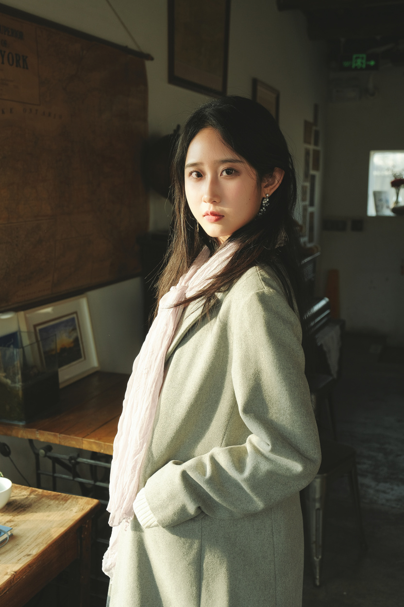
Brands, agencies and programmes I've worked with or on
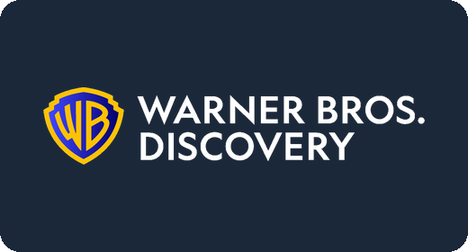
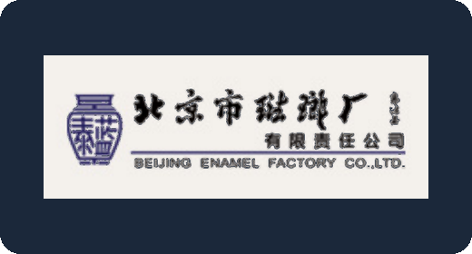
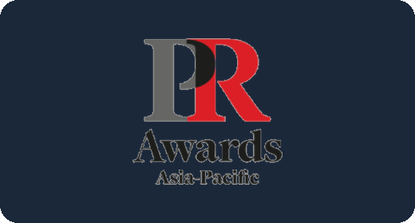
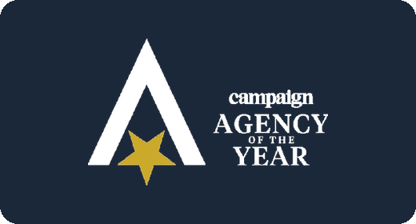
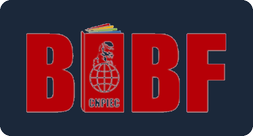
Selected work
Campaign and brand projects, plus a couple of independent ones I made because I wanted to. Open any project for the full story.
Media Relations & Event
Accenture Life Trends 2025
A Shanghai media event that turned a global research report into editorial coverage.
We launched Accenture Life Trends 2025 through an intimate media event at a historic villa in Shanghai, inviting journalists across a range of beats. From outreach and event coordination through post-event follow-up, the team created openings for the report's insights to move from research into editorial coverage.
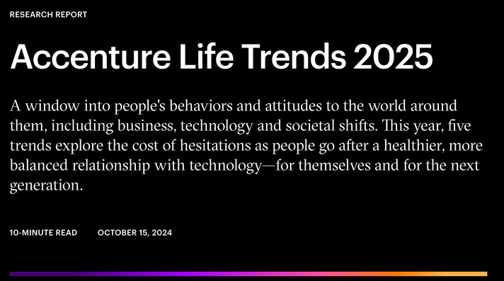
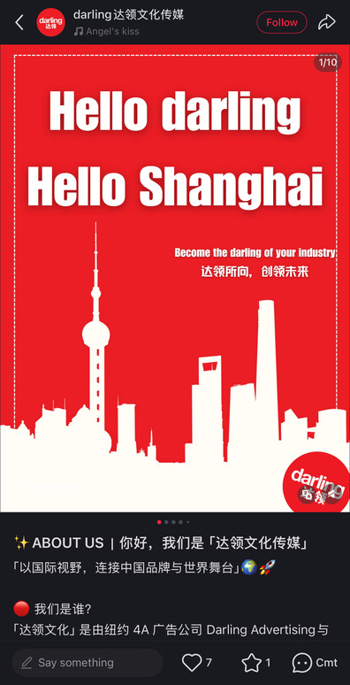
Social Media & Brand Voice
Darling — Rednote from zero
Building a New York agency's first local voice in China, post by post.
Darling is a New York advertising agency opening a China branch. I built its Rednote (Xiaohongshu) account from the ground up — content calendar, day-to-day publishing, copy, and visual assets — giving the agency a local-facing touchpoint to introduce its creative identity, past work, and capabilities to a Chinese audience.
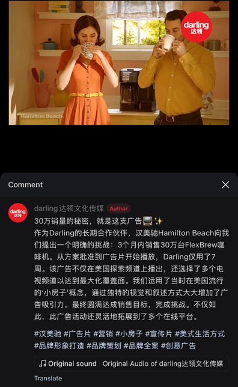
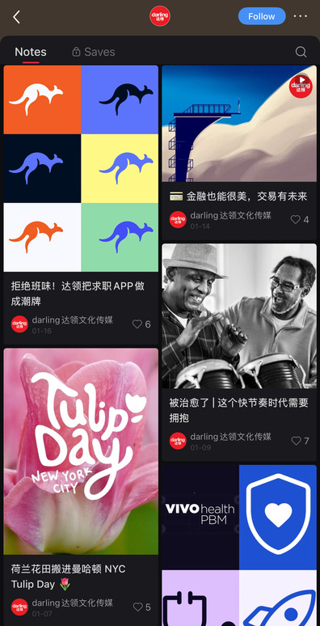
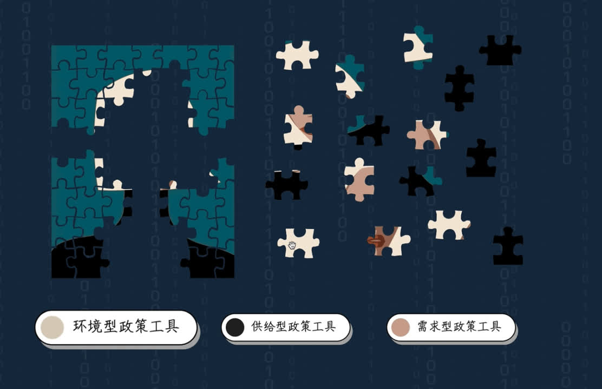
CSR Campaign & Data Visualization
Bridge the Gap
Turning a CSR commitment into a brand story people could feel.
The campaign helped translate a CSR commitment — the Sunshine Angel Program's work with disabled employees — into meaningful communication. Interviews with stakeholders across government, business, and disability communities shaped a content strategy combining storytelling, data visualization, and interactive experience: a jigsaw-puzzle interaction to explain policy gaps, plus data pieces comparing outcomes with and without accessible technology.
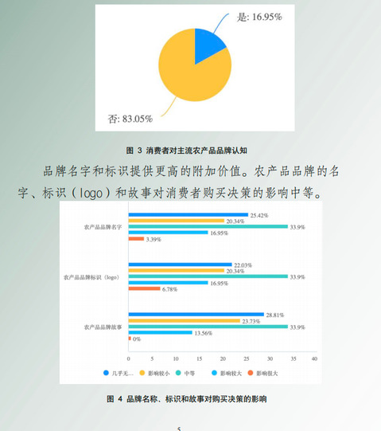
Brand & Marketing Strategy
BeiWu Town — Beimai Green Treasure
A premium regional brand for an agricultural town, from field study to packaging.
How does a regional agricultural industry build a premium brand in a competitive food market? The project combined market research, competitor benchmarking, field study, stakeholder interviews, and consumer surveys to identify quality and organic production as BeiWu Town's core advantage. We developed "Beimai Green Treasure" (北脉绿宝), a high-end regional brand with a full identity, product strategy, and marketing system spanning offline experience, social communities, e-commerce, and social media. The project won a Silver Medal at the China College Students' Challenge Cup Business Plan Competition.
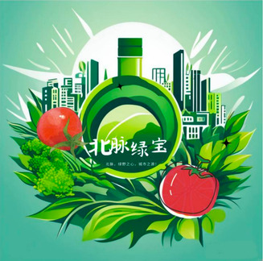
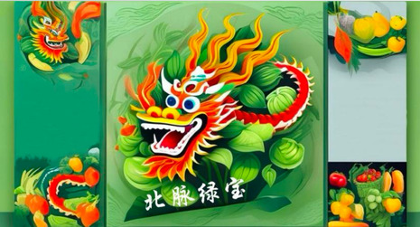
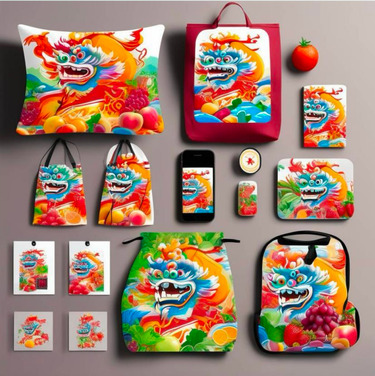
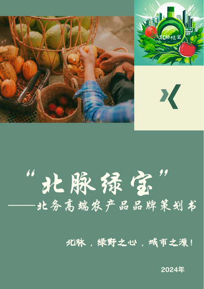
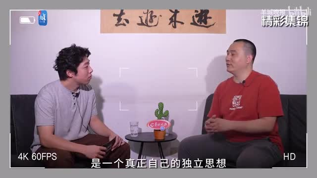
Content Production, Independent
Yangcheng Evening News × BiliBili
A short documentary episode, produced for a multi-platform media partner.
"You Lai You Qu" is a video series produced for BiliBili by Yangcheng Evening News. This episode follows a well-known Chinese game developer through a controversy over copyright and game imitation. I helped with interviews and filming, and shaped the footage in post-production into a narrative connecting his career to the industry's wider evolution — production and storytelling skills that carry directly into brand content work.
Embeds need a live domain to play — this will work once the site is on GitHub Pages. Watch on YouTube in the meantime.
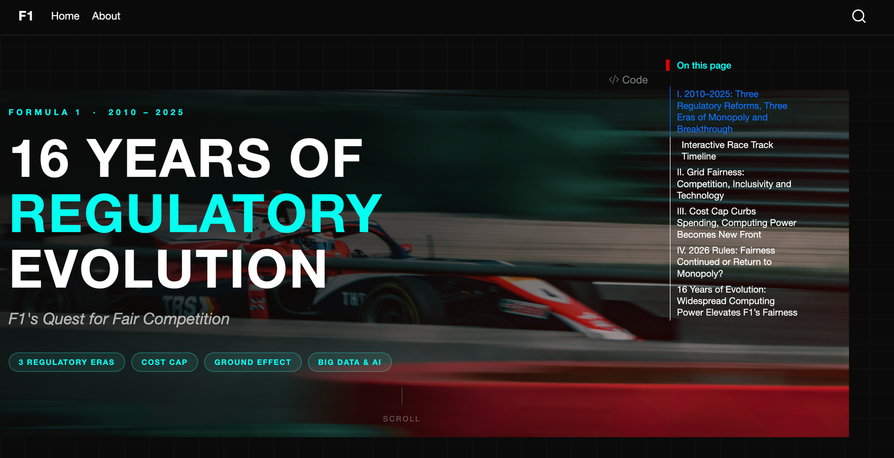
Independent Project — Content Strategy
16 Years of Regulatory Evolution
An interactive guide to Formula 1 regulation, for new fans and old.
As F1 attracts a new generation of fans, understanding the sport can be as hard as following the race. This self-directed project combines industry research, audience insight, long-form storytelling, and interactive data visualization to trace three regulatory eras — turning a technical subject into something newcomers and longtime fans can both follow.
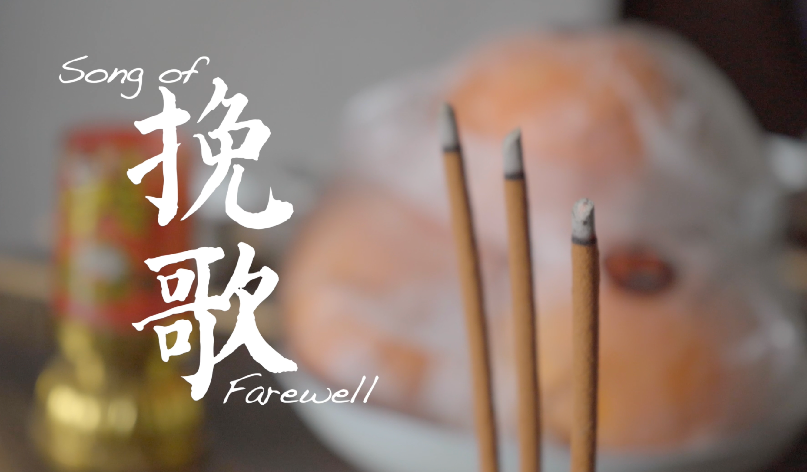
Independent Documentary
Song of Farewell
A micro-documentary following a 70-year-old professional mourner in Shanghai.
My first micro-documentary follows Ms. Xu, a professional mourner in Fengxian, Shanghai, who entered the profession after a turning point in her life. Over a month of fieldwork with a three-person team, I helped conduct interviews and observational filming, getting to know her and the people working alongside her. Rather than portray her as a guardian of tradition, we chose to show a person navigating culture, business, family, and survival.
Embeds need a live domain to play — this will work once the site is on GitHub Pages. Watch on YouTube in the meantime.
Experience
Each role picked up where the last one left off. Editing and reporting taught me to move fast and verify everything; producing content and video taught me to hold an audience's attention; brand and social media work taught me to build a voice from nothing; and running award programmes put me on the operations side of the industry I'd been covering. Five roles in, the through-line is communications work that has to actually perform — for a newsroom, a brand, or a room full of judges.
Editor Intern
- Edited and polished articles for print publication; reported on social events and authored 20+ pieces from original interviews and research.
- Sourced stories, coordinated interviews, and liaised with stakeholders for in-depth coverage.
Content & Media Intern
- Produced a micro-documentary series for BiliBili and filmed and edited short-form video, extending reach across platforms.
- Coordinated interviews with industry experts and public figures across economy, tech, and society stories.
Brand Marketing Intern
- Compiled bilingual weekly media monitoring reports tracking policy, market, and competitor coverage.
- Wrote press releases, social content, and event materials; managed a WeChat account and reported performance with data-driven insight.
- Coordinated venues, media contact lists, and campaign collateral for end-to-end brand event execution.
Social Media Intern
- Created social content — articles, posters, short videos, visuals — for Rednote and WeChat to build a consistent brand voice.
- Managed daily WeChat operations and used content performance data to inform the calendar and social strategy.
Awards & Training Events Intern
- Coordinated AV, vendor, and operations teams — scripts, rundowns, and logistics — for the Campaign PR Award and Agency of the Year.
- Engaged agencies and brand clients to drive award entries and ran jury panel operations; managed the contact database and judging-panel content on the official site.
- Produced EDM and social assets and tracked performance in marketing reports to optimise engagement.
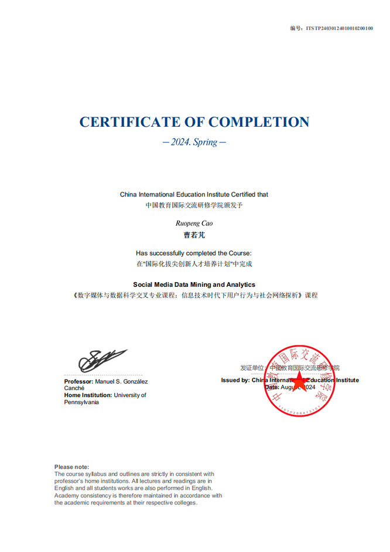